DeepSeek Harness背后的心脏：Cordis到底是什么
来源：微信公众号 归档日期：2026-09-10 抓取状态：成功 原文字符：37457｜配图：16 张
摘要速览
- DeepSeek Harness 的运行时基座是 Cordis 框架，它出自 Koishi 作者 Shigma，原本服务第三方 QQ 机器人生态
- Cordis 的核心主张：把插件"卸载"和"协作"从作者自觉上升为框架级保证，配置热更新不需要重启
- 它是元框架（meta-framework）：不回答"谁创建谁"（DI），而回答"谁在什么时候活着"（生命周期与依赖解析）
- 北大 + DeepSeek-AI 已发布 88 页论文将其机制形式化（fiber / effect / Schema / Service）
核心内容
- 模块化只解决代码组织，插件系统还要回答四件事：安装（怎么接入）、配置（放哪里）、卸载（定时器/监听器/连接谁来清理）、协作（依赖未就绪或被替换时怎么办）
- Cordis 把"卸载"与"协作"内建为默认行为：插件声明依赖（Service），框架管理生命周期；卸载时自动回收资源，避免泄漏
- 作者技术栈全览：Cordis（骨架）+ Schemastery（配置校验）+ Minato（数据层）+ Satorijs（协议适配）+ Koishi（集大成者），每个概念均出自 Shigma 一人
- 演进史：2020 年 Koishi 发布 → 2022 年 cordis 独立上 npm → 2024 年底 Cordis 4 彻底重构，引入基于 fiber 的生命周期体系
- 与传统 DI 的区别：DI 容器解决实例创建与注入；Cordis 解决"存活时间轴"——一个能力什么时候可用、什么时候必须消失
- 对 Agent Harness 的意义："一切皆插件"的可卸载、可协作运行时，是 DeepSeek Harness 架构选择的地基
可执行启发
- 设计自己的 Agent 插件体系时，把"资源清理"和"依赖协商"做进框架层，而不是要求每个 skill 作者自觉处理
- 评估 Agent 基座时用"改配置要不要重启"作为架构成熟度的快速检验指标
归属：[[02-输入/按主题/AI与效率/_index|AI与效率]]
我的想法
（待补充）
原文沉淀
目录
- 1. 插件系统为什么要一个框架
- 1.1 四个问题
- 安装：新功能怎么被"接"进系统？
- 配置：同一功能在不同部署环境用不同配置，写在哪里？
- 1.2 作者：Shigma
- 1.3 出身与名字
- 1.4 定位：元框架
- 2. 核心机制：五个概念，七个小节
- 2.1 第一个插件
- 2.2 上下文（Context）：一切操作的入口
- 2.3 fiber：插件的生命周期
- 2.4 effect：可逆的副作用
- 2.5 服务与注入：响应式的依赖
- 2.6 事件：喊话与决策链
- 2.7 Schema 与声明式组合：配置即程序
- 3. 在 DeepSeek Harness 中：一切皆插件
- 3.1 启动：约二十行代码搭起整个应用
- 3.2 Profile：应用被拆成可叠加的层
- 3.3 工具流水线：Agent 的每一项能力
- 3.4 自指的设计：Agent 检查并改装自己的运行时
- 4. 在 DSH 里能开发什么：插件槽位与插件创意
- 4.1 槽位：扩展点全部是服务
- 4.2 槽位背后的设计：三种角色
- 4.3 开发入口：三种方式把插件装进去
- 4.4 已经存在的插件（举例）
- 4.5 可能的插件：常规与"惊艳"
- 5. 论文说了什么：从"好用的框架"到"被证明的范式"
- 5.1 论文要解决的问题：动态组合为什么难
- 5.2 理论支柱：effect 与 coeffect
- 5.3 可逆副作用：把"撤销"做成结构保证
- 5.3.1 核心想法：每个变换都携带逆
- 5.3.2 关键性质 1：精确恢复
- 5.3.3 关键性质 2：独立性（independence）
- 5.3.4 关键性质 3：恢复是"观察等价"而非字面相等
- 5.4 响应式余效应：把"依赖"做成结构保证
- 5.4.1 依赖表也是类型化的
- 5.4.2 规范与通知：激活、停用、无关
- 5.4.3 隔离与拦截：调整"解析"而非"存储"
- 5.5 统一上下文：Context 即范式
- 5.5.1 一个自相似的递归类型
- 5.5.2 观察等价供给独立性
- 5.5.3 范式定位：两端之间的第三极
- 5.6 动态组合演算与元理论：从局部保证到全局保证
- 5.7 理论如何变成代码
- 5.8 与既有系统的对比：特点的证明
- 5.9 结论：点名自进化 Agent
- 6. 生态：Cordis 不止有 Koishi
- 6.1 Koishi：第一个实战平台
- 6.2 @cordisjs：独立的通用生态
- 6.3 生态背后的几件事
- 7. 结语：心脏、引擎与定理
- 参考资料

作者：lss233
DeepSeek Harness 的"一切皆插件"背后，跑的是一个叫 Cordis 的框架——原本服务于第三方 QQ 机器人，如今被 DeepSeek 用作整个 Agent 运行时的地基。这篇文章希望用通俗易懂的语言，把 Cordis 的魅力介绍给大家：为什么"卸载"和"协作"能变成框架的默认行为，为什么"改配置不用重启"是理所当然，为什么一篇 88 页的论文会以它为研究对象。
1. 插件系统为什么要一个框架
1.1 四个问题
假设你写了一个聊天机器人，最初逻辑都在一个文件里。功能变多后你开始拆模块，但模块化只解决"代码怎么组织"，解决不了另外四件事：
安装：新功能怎么被"接"进系统？
配置：同一功能在不同部署环境用不同配置，写在哪里？
- 卸载：功能下线时，它的定时器、监听器、连接由谁来清理？清理不干净就是泄漏。
协作：功能 A 依赖功能 B 的能力，但 B 可能还没启动、之后可能被替换成别的实现，A 该如何应对？
插件系统就是对这四个问题的回答。Cordis 的特点是：它把"卸载"和"协作"这两件事，从"插件作者的自觉"上升为"框架级保证"。
1.2 作者：Shigma
先认识一下写出它的人——Shigma。
Shigma 在第三方 QQ 机器人圈子里是相当出名的存在，(群友们)亲切地称呼他为梦梦。他的 GitHub 账号（shigma）下有 130 多个公开仓库，如果你把 npm 上几个包的主页打开，会看到一长串 maintainer 都是同一个人：
| 包 | 一句话描述 |
|---|---|
koishi | 跨平台聊天机器人框架（npm 官方描述："Made with Love"） |
cordis | 插件化应用框架，本文的主角 |
@satorijs/core | 跨平台聊天协议适配层（Koishi 支持 QQ、Discord、Telegram 的地基） |
schemastery | 类型驱动的 schema 校验器 |
minato | 类型驱动的数据库框架（Koishi 的数据层） |
cosmokit | 通用工具集 |
这是一套一个人撑起来的技术栈：Cordis 是骨架（生命周期与依赖），Schemastery 管配置校验，Minato 管数据存取，Satorijs 管平台协议，Koishi 是集大成者，整个体系共同运行在 Cordis 之上。这篇文章里讲到的每一个概念（fiber、effect、Schema、Service），都出自他一人之手。
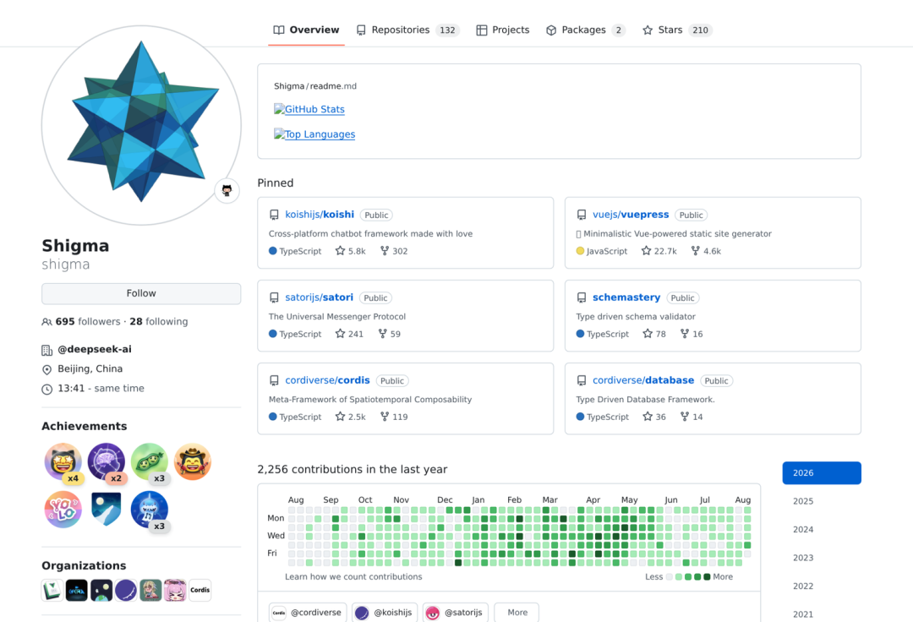
Shigma 在 2023 年底接受过腾讯媒体研究院《20 多岁做什么时间更有价值》系列的专访（BV1AQ4y157S8），那时他是研二学生，做 QQ 机器人开发五年了。被问到 AI 会不会取代人类时，他说旧的岗位被取代，一定会创造出新的岗位，人类反而更有机会生活在更好的世界里。他做 QQ 机器人的初衷之一，就是帮自己提升工作效率。那时 Cordis 还在 Koishi 的小圈子里，没人想到它两年后会成为 DeepSeek Harness 的心脏。
如今，Cordis 的配套论文《A Programming Paradigm for Spatiotemporal Composability》以预印本发布，署名单位是北京大学与 DeepSeek-AI，第一作者 Yifan Shi，合著者 Wei Zhang、Tianyi Cui。论文把 Cordis 的机制形式化，给出了定义、定理与证明。
1.3 出身与名字
Cordis 诞生于 Koishi——Shigma 创立的跨平台聊天机器人框架，2020 年 1 月发布首个正式版本。Koishi 的插件体系成熟后，核心层被独立出来成为通用框架：2022 年 4 月 cordis 包登上 npm；2023 年底进入 3.x；2024 年底开始迭代 Cordis 4（首个 4.0 预发布发布于 2024 年 11 月），一次彻底重构，引入了基于 fiber 的生命周期体系。
名字的由来：Cordis 是拉丁语"心"（cor）的所有格，意为"心脏"。它是 Koishi 的心脏，如今也成了 DeepSeek Harness 的心脏。
1.4 定位：元框架
Cordis 不是机器人框架（Koishi 才是，Cordis 只是它的底层），也不是 DI 容器。传统 DI 回答"谁创建谁"，Cordis 回答的是更困难的问题："谁在什么时候活着"。论文给它的定位是 meta-framework：它规定"副作用如何组合、依赖如何解析"，但不预设任何业务领域，QQ 机器人可以用它，Agent 运行时也可以。
2. 核心机制：五个概念，七个小节
Cordis 的全部语义可以浓缩为五个概念：插件、上下文、注入、事件、可逆副作用。由浅入深逐一拆开。
2.1 第一个插件
写 Cordis 插件最爽的一点：完全不需要框架启动代码。
// hello.ts
import type { Context } from '@deepseek-ai/cordis'
export const name = 'hello'
export function apply(ctx: Context) {
console.log('hello from my first plugin')
}# cordis.yml —— 应用本身就是一个配置文件
- name: './hello.ts'运行 DSH 自带的小启动器（创建根 Context、挂载 Loader 插件、读取 cordis.yml），输出 hello from my first plugin。注意分工：插件只描述贡献，应用长什么样由配置决定。这就是"配置即组合"。
插件有三种形态：
import { Service, type Context } from '@deepseek-ai/cordis'
export function apply(ctx: Context) {} // 1. 函数形态（最常见）
export const objectPlugin = { // 2. 对象形态
name: 'object-plugin',
apply(ctx: Context) {},
}
export class MyService extends Service { // 3. 类形态（要对外提供服务时用）
constructor(ctx: Context) {
super(ctx, 'myService')
}
}在 DSH 里：你写的每一个工具插件、适配器插件、面板插件，都是这三种形态之一。
2.2 上下文（Context）：一切操作的入口
在 Cordis 里，你几乎只会跟一个东西打交道：ctx。它是上下文，也是服务容器，承载了插件能做的所有事情：
export function apply(ctx: Context) {
ctx.on('some/event', (payload) => { /* ... */ }) // 监听事件（卸载时自动移除）
ctx.effect(() => { /* ... */ }) // 注册副作用（卸载时自动回滚）
ctx.plugin(SomePlugin) // 挂载子插件（随父插件卸载）
ctx.get('someService') // 读取服务（没有则 undefined）
ctx.provide('someValue', 42) // 提供服务
}ctx.plugin(child) 不是简单的"注册"，而是派生出一个子上下文。插件因此不是平铺的，而是一棵树：
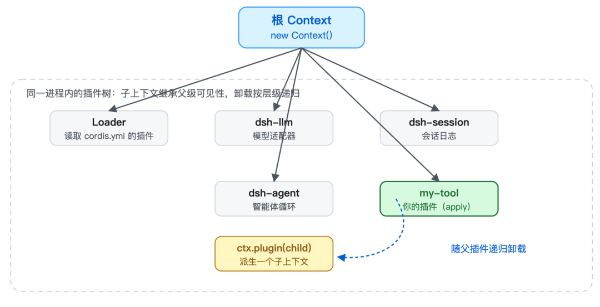
子上下文能看到父上下文的一切（继承），但卸载是按层级的：父插件卸载，它的所有子插件递归卸载；子插件卸载，不影响兄弟和父级。这棵插件树是 Cordis 一切生命周期语义的骨架。
在 DSH 里：你看到的每个功能（工具、模型、会话、面板）都对应着这棵树上的一次
ctx.plugin()。
2.3 fiber：插件的生命周期
Cordis 4 为每个已加载的插件实例维护一个 fiber（纤维），状态机如下：
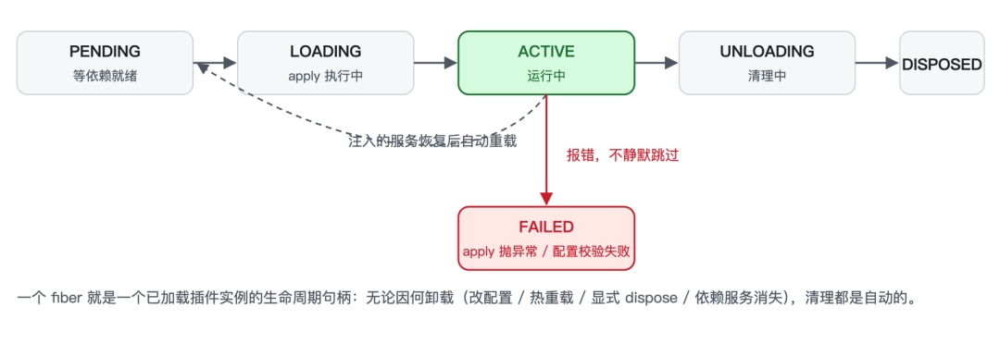
- PENDING：已声明，但
inject的服务尚未就绪，等待中；
- LOADING / ACTIVE：
apply正在执行、已完成；
- FAILED：
apply抛异常或配置校验失败；
- UNLOADING / DISPOSED：清理中、已拆除。
插件可能因配置修改、热重载、显式 dispose() 或依赖服务消失而被卸载。无论哪种原因，清理都是自动的。
在 DSH 里：
cordis_inspect巡检的就是每个 fiber 的状态；一个插件"加载了却没反应"，多半是蹲在 PENDING。
2.4 effect：可逆的副作用
这是 Cordis 的第一个核心机制，也是它与传统 DI 容器的区别所在。
ctx.effect(() => {
const conn = createConnection()
return () => conn.close() // disposer：如何清理
})effect 的主体在加载时执行，返回的 disposer 在卸载时执行。你永远不需要自己调用清理函数，不管插件因为什么原因被卸载，Cordis 都会替你把定时器、监听器、连接全部回滚。
此外，Cordis 的内置 API 本身就是 effect：ctx.on() 的监听器随插件卸载、ctx.plugin() 的子插件递归卸载、服务注册随提供方消失。论文的实现章节有一个关键结论：Cordis 中所有对上下文的变更，最终都归结为 ctx.effect 这一个原语，提供服务、挂载插件、注册监听器，全是它的特例。因此"任何通过上下文进行的操作都自动可追踪、可恢复"不是设计口号，而是结构事实。
插件作者只需要记住一条铁律：凡是自己创建、Cordis 不管的资源，都包进 ctx.effect()。
因为副作用可逆，插件就可以被安全地卸载与重装，由此获得热重载（HMR）、故障自动恢复、测试隔离。我们在第 5 章会看到，DSH 的"动态插件装了就卸"全部建立在这一行原语上。
在 DSH 里：改配置 → 旧插件卸载（所有 effect 回滚）→ 新插件加载，进程不重启。这就是"改配置不用重启"的底层原理。
2.5 服务与注入：响应式的依赖
这是 Cordis 的第二个核心机制。
把一项能力挂到 ctx 上，让别的插件按名字取用，这就是 Service：
import { Service, type Context } from '@deepseek-ai/cordis'
export class GreeterService extends Service {
constructor(ctx: Context) {
super(ctx, 'greeter') // 注册：以后谁都能 ctx.greeter 拿到我
}
greet(who: string) {
return `Hello, ${who}!`
}
}消费方只声明名字，不 import 实现：
export const inject = ['greeter'] // 声明依赖
export function apply(ctx: Context) {
console.log(ctx.greeter.greet('world') // 此时 greeter 必定就绪
}inject 的语义是：插件保持 PENDING，直到所列服务全部就绪。配置文件顺序无关紧要，启动顺序由依赖关系决定。
与传统 DI 的本质区别在于：传统 DI 假设"一旦绑定，服务就一直在"；Cordis 的假设是"服务可以随时出现，也可以随时消失"。在 Agent 场景里这是常态，LLM 提供方被限流、MCP 服务器崩溃导致工具被注销、文件 watcher 被系统杀死。Cordis 的处理是：提供方被卸载时，所有依赖它的插件自动卸载（effect 回滚）；新提供方就绪后，自动重载。依赖方不需要写任何重连代码。
此外还有两个配套机制：
ctx.isolate(key, realm)：隔离。让一个作用域内某项服务解析到独立实例，两个组各自用各自的实现，互不干扰；
ctx.intercept(key, meta)：拦截。给依赖访问附加元数据，外层上下文可以约束组件如何使用某个依赖，而不修改组件本身。
在 DSH 里：
ctx.tools、ctx.llm、ctx.shell、ctx.sessions、ctx.skills全都是这样的服务（第 4 章会列出完整的槽位表）。
2.6 事件：喊话与决策链
服务适合"直接打电话"，但很多时候插件只想"喊一嗓子"或者"拦一下"，不关心谁在听。Cordis 的事件系统是类型化的，事件名和监听器签名靠 TypeScript 声明合并获得全链路类型安全：
declare module '@deepseek-ai/cordis' {
interface Events {
'stats/report'(name: string, count: number): void
}
}
ctx.emit('stats/report', 'tool_call', 42) // 发出
ctx.on('stats/report', (name, count) => { /* 监听，卸载时自动移除 */ })事件采用哪种分发模式，是它的公开契约，决定了监听器能否返回值、能否并发、能否短路：
| 模式 | 语义 |
|---|---|
emit | 同步广播；不等待、不收集返回值 |
parallel | 所有监听器并发执行并等待 |
serial | 按序执行；第一个非空返回值胜出，停止后续 |
bail | serial 的同步版本 |
waterfall | 环绕中间件（around-middleware），见下 |
waterfall 是 DSH 用得最多的模式，本质是把 Koa、Express 的中间件搬进事件系统：每个监听器收到参数和一个 next() continuation：
ctx.on('some/decision', async (input, next) => {
if (!hasPermission(input) return { denied: true } // 不调 next() = 否决，短路
return next() // 调 next() = 放行
})多个互不相识的插件，就这样组成一条决策链。这里有一条 DSH 明文纪律：只负责观察和记录的 waterfall 监听器必须调用 next()，否则会无声地吞掉下游所有默认行为。
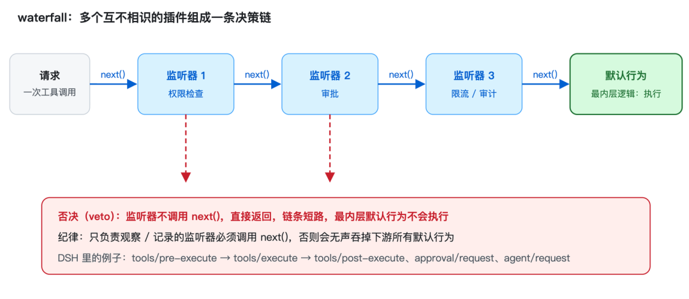
在 DSH 里：工具执行管道
tools/pre-execute → tools/execute → tools/post-execute就是一条 waterfall 链；approval/request、agent/request也是。
2.7 Schema 与声明式组合：配置即程序
cordis.yml 里的每一项（entry）都可以带元数据：
- id: greeter # 稳定身份：loader 靠它区分"修改"与"删了重加"
name: './greeter.ts'
- id: consumer
name: './consumer.ts'
disabled: true # 保留条目但不挂载；改回后自动加载id：不带id的条目每次读取都会获得新 id，于是配置文件的任何编辑都会被当作"先删后加"。带id才能精准增量更新。
group：把一组插件打包成单元整体装卸；配合isolate可让组内使用独立的服务实例。
- Schema 校验：插件用 schema 声明配置结构（schemastery，就是 Shigma 写的那个），Cordis 在调用
apply前校验。配置非法则加载失败并给出精确错误，插件绝不会在配置不完整时半启动。
export const Config: Schema<Config> = Schema.object({
greeting: Schema.string().default('Hello'),
targets: Schema.array(String).default(['world']),
})!!js表达式：DSH 的 Loader 扩展支持在config与disabled字段内写运行时求值的表达式（如!!js process.env.X ?? 'default'），并在依赖就绪后才求值。
配置即程序：修改配置 = 局部热替换，无需重启。
在 DSH 里：
cordis.patch.yml与--patch覆盖层，就是这套声明式组合在生产环境的使用方式（下一章详述）。
Cordis 的五个核心概念全部出场：插件、上下文、注入、事件、可逆副作用，加上把它们串起来的 Schema。这些机制组合起来，能搭出多大的系统？下一章用 DeepSeek Harness 来回答。
3. 在 DeepSeek Harness 中：一切皆插件
以下内容来自 DSH 0.1.0-rc.6 的实际源码（@deepseek-ai/cordis 4.0.1）。
3.1 启动：约二十行代码搭起整个应用
import { Context } from '@deepseek-ai/cordis'
import Loader from '@deepseek-ai/cordis-plugin-loader'
async function boot(binName, configPath, patches, prepare, baseUrl) {
const ctx = new Context()
ctx.baseUrl = /* 相对路径基准 */
ctx.provide('dshHomePath', dshHomePath) // 引导值
await ctx.plugin(Loader) // 挂载 Loader
await prepare?.(ctx)
await mountRootInclude(ctx, configPath, patches, baseUrl) // Include 挂载配置树
await ctx.get('loader')?.await() // 等整棵树稳定
await assertEntriesActivated(ctx, binName) // 审计：不允许条目半死不活
return ctx
}根 Context 只做了三件小事。其余一切，来自配置树。
3.2 Profile：应用被拆成可叠加的层
DSH 引入了 Profile 概念：$DSH_HOME/profiles/<名字> 下的一个目录，包含 manifest（dsh.profile.bundles 列出按顺序应用的组合包）和用户自己的 cordis.patch.yml。配置树的组装顺序：
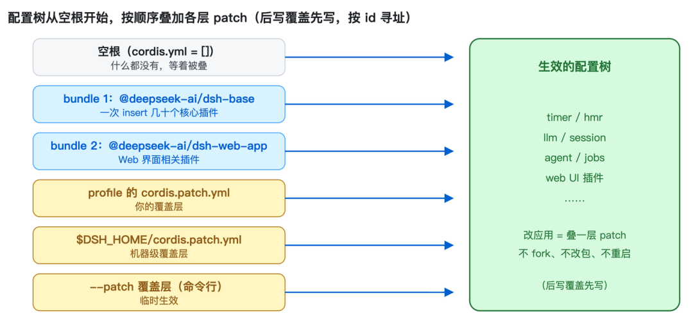
Bundle（组合包）就是一个 npm 包，其 package.json 声明 "dsh": { "bundle": { "patch": "./cordis.patch.yml" } }。核心组合包 @deepseek-ai/dsh-base 的 patch 就是把几十个插件一次 insert 进空根：
- insert:
- id: timer
name: '@deepseek-ai/cordis-plugin-timer'
- id: hmr
name: '@deepseek-ai/cordis-plugin-hmr'
config:
root: ['.']
- id: llm
name: '@deepseek-ai/dsh-llm'
- id: session
name: '@deepseek-ai/dsh-session'
- id: agent
name: '@deepseek-ai/dsh-agent'
- id: jobs
name: '@deepseek-ai/dsh-jobs-local'
# ……以及更多部署方想改默认行为，无需改任何源码，在自己的 patch 层按 id 覆盖一行即可（后写覆盖先写、可 insert、可 disabled）。连"应用由哪些插件组成、各是什么配置"本身，都是可叠加、可覆盖、可审计的声明，这就是"一切皆插件"的技术底座。
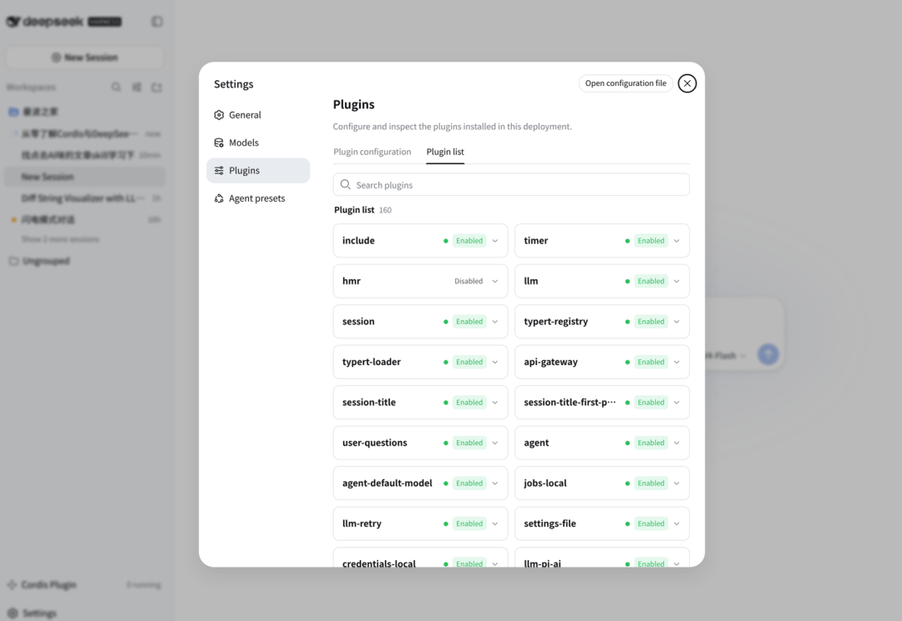
3.3 工具流水线：Agent 的每一项能力
Agent 的能力边界是 ctx.tools 服务。注册一个工具，本质就是一个 Cordis 插件：
export const name = 'greet-tool'
export const inject = ['tools']
export function apply(ctx: Context) {
ctx.tools.register(defineTool({
name: 'greet',
description: 'Greet the named person.',
parameters: { name: { type: 'string', required: true } },
async execute(args) { return `Hello, ${args.name}!` },
})
}inject: ['tools'] 等待注册表就绪；ctx.tools.register(...) 注册即 effect，插件卸载时工具自动注销；tools/result 事件让任何插件都能观察每次工具调用，无需认识执行者。本文写作过程中用到的 bash、read、grep、subagent 等工具，全部挂在 ctx.tools 上。
3.4 自指的设计：Agent 检查并改装自己的运行时
DSH 最值得注意的包是 @deepseek-ai/dsh-tool-cordis，官方称之为"自指的 Cordis 工具集"（self-referential Cordis toolset）。它给 Agent 提供五个工具：
cordis_inspect：对当前进程只读巡检，哪些服务在运行、各 fiber 的状态、注册了哪些工具、每个ctx.<key>的完整契约；
cordis_define：现场定义一个小插件包（可带"宿主半 + 浏览器半"），只记录不执行；
cordis_run：把宿主半放入node:vm沙箱执行，把浏览器半推送到每个打开的网页；
cordis_stop、cordis_undefine：卸载动态包。
Agent 可以检查自己运行的框架、现场编写并运行动态插件、用完再卸载，全程不动 cordis.yml、不装 npm 包、不重启进程。DSH 的信任立场很明确：动态包与 bash 同权，沙箱隔离全局但不构成安全边界。
与之配套的"双半插件"设计：宿主半跑在服务端管逻辑，浏览器半跑在网页里管 UI，二者通过 host.call 做 RPC。"一切皆插件"在 DSH 里是字面意义上的：前端 UI 组件也是插件（dsh-client-ui-* 系列有几十个包），浏览器里运行着一个独立的 Cordis 客户端运行时。
自省 + 现场改装，这两点叠加就是"可进化 Agent"的雏形，论文的结论部分恰好把"自进化 Agent 运行时"列为这套理论未来的验证方向（见 5.9）。
4. 在 DSH 里能开发什么：插件槽位与插件创意
这一章回答一个更实际的问题：如果我想在 DSH 里做点什么，有哪些"槽位"可以插？以下槽位清单来自 DSH 的能力文档（capability-seams）与安装包中实际注册的服务键。
4.1 槽位：扩展点全部是服务
DSH 的扩展点不是一个"API 列表"，而是一张 Cordis 服务注册表：任何插件都可以注册新服务，也可以替换已有服务的提供方（这正是 §2.5 响应式依赖的直接应用）。常用槽位按类别整理如下：
| 类别 | 槽位（ctx.<key>） | 用途 | 现有提供方（可替换） |
|---|---|---|---|
| 执行 | shell | Bash 执行 | bash-local 、bash-sandbox、pwsh-local、E2B |
| 执行 | codeRuntime | 代码执行 | code-runtime-worker |
| 执行 | subprocess 、 terminals | 子进程、持久 PTY | subprocess-local 、terminal-bash |
| 执行 | lsp | 语言服务器导航 | lsp-local |
| 模型 | llm | LLM 适配器注册表 | llm-deepseek 、llm-pi-ai、llm-replay |
| 智能 | agents 、 agentLoop 、 agentDefaultModel | Agent 注册表、循环驱动、默认模型 | agent-loop 、agent-default-model |
| 智能 | agentPresets | 会话级 Agent 组合 | agent-presets |
| 智能 | subagents | 子 Agent 提供方 | subagent-spawn/fork-in-process 、ACP、Codex、Claude Code |
| 数据 | sessions 、 sessionPersistence | 会话日志、持久化 | session-persistence-jsonl 、-sqlite |
| 数据 | sessionQuery | 会话读取与检索 | session-query-sqlite |
| 数据 | storage 、 attachments 、 spillStore | 通用存储、附件、溢出存储 | storage-json 、storage-sqlite、attachment-local、spill-local |
| 数据 | sessionTitle 、 sessionProjections | 会话标题、投影单元 | session-title-first-prompt-llm 等 |
| 环境 | fs | 文件系统提供方 | fs-local 、fs-sandbox、fs-e2b |
| 环境 | web | Web 访问（抓取、搜索） | web-fetch-http 、web-search-deepseek/exa/perplexity |
| 环境 | credentials 、 settings | 凭据、用户设置 | credentials-local 、settings-file |
| 环境 | webServer 、 directoryPicker | HTTP 路由、目录选择 | webserver 、directory-picker-native/browse |
| 治理 | tools | 工具注册表与受保护执行管道 | 所有 dsh-tool-* |
| 治理 | approval 、 permissionPresets 、 sandboxPolicy | 审批、权限、沙箱策略 | approval 、permission-presets、sandbox-policy |
| 编排 | goals 、 jobs 、 workflowEngine 、 planMode | 长期目标、后台任务、工作流、计划模式 | dsh-goal 、dsh-jobs-local、workflow-worker-thread |
| 自指 | dynamicCordisRunner 、 cordisInspect | 动态包宿主、运行时巡检 | cordis-host-runner |
| 前端 | slots 、 clientModules 、 theme 、 locale | UI 槽位、客户端插件图、主题、语言 | dsh-client-ui-* 系列 |
4.2 槽位背后的设计：三种角色
DSH 对"可替换能力"有一套固定模式，Service Definition、Service Provider、Consumer 三种角色，以 shell 为例：
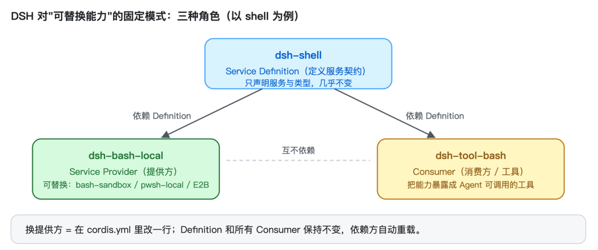
- Definition 只声明服务与类型，几乎不变；
- Provider 可以独立替换，换一个提供方（比如换成沙箱执行），通过
cordis.yml改一行配置，Definition 和所有 Consumer 保持不变；
- Consumer 与 Provider 互不依赖。
这套模式就是"一切皆插件"在能力层面的落地：每一项能力都是一个 seam（接缝），接缝两侧可以独立演进。
4.3 开发入口：三种方式把插件装进去
patch 覆盖层（最快）：写一个 YAML，dsh web --patch ./my-plugins.yml 启动时插入条目：
- insert:
- id: my-plugin
name: '/abs/path/to/my-plugin.ts'- profile 的
cordis.patch.yml：常驻生效的用户层；
- bundle 包：把一组插件打包成 npm 包，声明
dsh.bundle.patch，成为可复用的"组合包"。
插件代码本身依然是 Cordis 那套：函数、对象、类三种形态、inject 声明依赖、ctx.effect 管理资源、Schema 校验配置、ctx.tools.register(defineTool(...) 注册工具。
4.4 已经存在的插件（举例）
内置的插件（dsh-* 包）按角色分四类：
- 工具类（挂在
ctx.tools上，即 Agent 能调用的能力）：tool-bash、tool-fs、tool-fs-search、tool-web、tool-subagent、tool-subagent-control、tool-workflow、tool-goal、tool-jobs、tool-todo、tool-skill、tool-ralph、tool-ask-user、tool-lsp、tool-cordis（自指工具集）……
- 提供方类：模型适配器（DeepSeek、pi-ai 多提供方、replay）、shell 提供方（本地、沙箱、PowerShell）、fs 提供方（本地、沙箱、E2B）、web 搜索源（DeepSeek、Exa、Perplexity）、持久化后端（JSONL、SQLite）、存储后端、技能提供方、会话标题生成器……
- 系统类：上下文压缩（
compaction-basic）、token 计量、消息反馈、权限预设、计划模式、长期目标、审批管道……
- 前端类：
dsh-client-ui-*数十个包，设置页、模型选择、插件管理、任务面板、子 Agent 面板、目标面板、主题……
内置之外，社区已经长出了一片插件生态。GitHub 上有一个社区维护的精选列表 awesome-dsh-plugin（搜 dsh-plugin 话题就能找到），截至 2026 年 8 月收录 174 个可通过 dsh plugin add 安装的插件：
几个有代表性的例子：
- 改界面：dsh-visualize 让模型把交互式 HTML 卡片直接画进会话流；dsh-TUI 是像素鲸鱼顶栏的全屏终端 UI；dsh-deep-whale 是一系列 Web 皮肤；dsh-balance-meter 在输入框显示账户余额与花费；
- 改记忆：dsh-memento 提供有界、分层、带审批门、可审计的跨会话记忆；dsh-mneme 用 SQLite + 可编辑的 Markdown 镜像做跨会话记忆；
- 改能力：dsh-computer-use 让 Agent 控制 macOS；dsh-data-agent 帮 AI 连数据库写 SQL；dsh-docker 是带护栏的容器控制；dsh-toolkit 一键装十件套零依赖工具；
- 改协作：dsh-agent-teams 多智能体团队；dsh-crosstalk 跨会话互发消息；dsh-chat-import 把 Claude Code、Codex、ChatGPT 的聊天记录导入为 DSH 会话；
- 自进化：dsh-evolve 让 Agent 在会话内给自己热挂载、卸载持久化插件；dsh-continual-evolve 从会话轨迹沉淀可审计、可回滚的 harness 状态；
- 插件基建：dsh-find-plugin 让 Agent 在会话内直接搜索并安装插件；dsh-plugin-manager 提供
dsh pm多源插件管理。
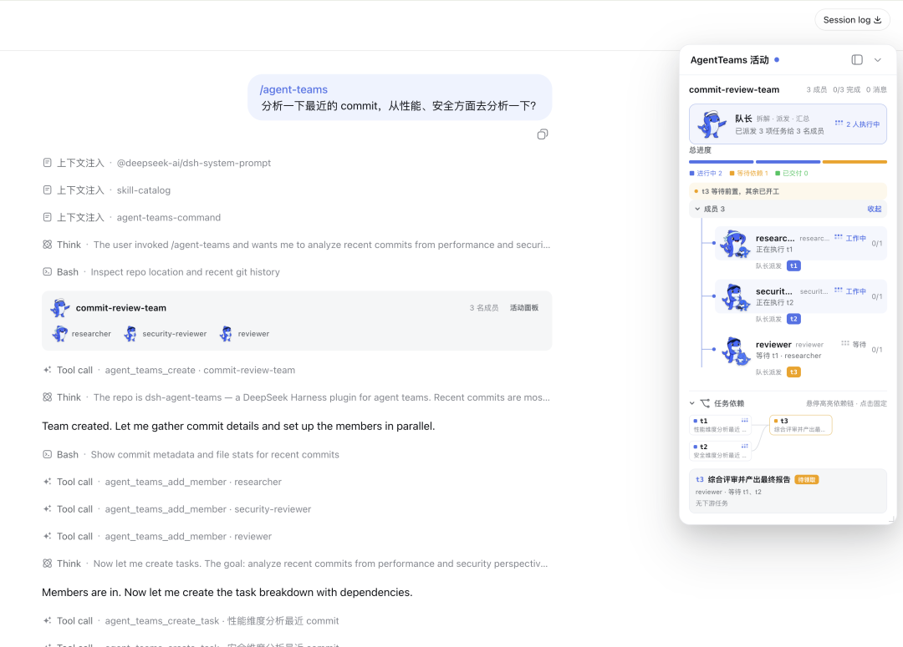
4.5 可能的插件：常规与"惊艳"
常规方向（模式成熟、直接照着现有插件写）：
- 新工具：数据库查询、浏览器自动化、Docker、K8s 操作、MCP 客户端、Git 操作、部署与测试运行器；
- 新提供方：接入任意 LLM 的适配器、远程、容器 shell 提供方、新的搜索源、新的持久化与存储后端、新的技能提供方；
- 治理与可观测：审批策略插件（挂在 waterfall 链上）、权限预设、审计日志、token 预算控制、OTel 遥测（已有 seam）；
- 界面：新的 Web 面板（
slots）、命令面板、通过webServer暴露 HTTP API。
"惊艳"方向（以下都不是空想，每一步都落在 DSH 现成的机制上）：
- 会写插件的插件：插件可以用
ctx.loader.create()在运行时动态挂载、更新、移除其他配置条目，插件本身去"组装"插件；再配合cordis_define、cordis_run，Agent 可以现场生成并运行自己的工具。这是"自进化"的闭环：生成 → 沙箱运行 → 观测结果 → 保留或卸载。
- 会话级隔离的"分身"：
ctx.isolate+agentPresets让每个会话拥有独立配置的服务实例，这个会话用 DeepSeek 模型 + 本地执行，那个会话用别的模型 + 沙箱执行，互不干扰。相当于一个进程里跑多个"虚拟 Harness"。
- 生产环境不停机换引擎：在 patch 层替换
llm、shell的提供方，所有依赖方自动卸载重载；如果按论文的 service broker 模式实现（见 5.7），还能做灰度与滚动切换（新旧提供方并存，按权重分配请求）。
- 策略网关：用 waterfall 事件把"审批 → 权限 → 限流 → 审计"串成一条决策链，新增一条策略 = 新增一个监听器插件，不需要改执行管道。
- 专家 Agent 池：基于
ctx.subagents构建一组常驻子 Agent（代码审查员、测试员、文档员），主 Agent 按需调度、失败续接，子 Agent 从"一次性工具"升级为"常驻服务"。
- 分层记忆系统：在
sessionProjections、sessionProjectionCache上实现工作记忆、长期记忆与摘要折叠，Agent 的"记忆"变成可插拔的插件。
- 浏览器双半插件：一个动态包同时携带宿主半与浏览器半，现场给 Web UI 注入一个面板、一个监控视图，用完即卸，全程不提交代码。
- 工作流即插件：在
workflowEngine上注册新的编排范式（除 Ralph 循环、并行 fan-out 之外的自定义迭代模式），把"如何多 Agent 协作"本身变成可组合的插件。
这些方向的共同点是：它们都靠"插一个插件"实现，而不是靠"改框架"，这正是 Cordis 的时空可组合性在 DSH 里的兑现。
5. 论文说了什么：从"好用的框架"到"被证明的范式"
Cordis 的配套论文《A Programming Paradigm for Spatiotemporal Composability》（cordiverse/paper）由北京大学与 DeepSeek-AI 的研究者合著，88 页预印本。它做的事不是"给 Cordis 写说明书"，而是把 Cordis 的核心机制形式化，证明它们构成一种新的编程范式。论文里没有一句"我们的框架很优秀"，有的是定义、定理与证明，以及一个贯穿始终的主张：
动态组合（运行时装卸组件）缺乏形式基础；Cordis 用两个运行时机制把它补上了，并证明了由此得到的性质。
5.1 论文要解决的问题：动态组合为什么难
软件工程的一切都建立在"组合"之上。但传统组合是静态的：函数调用、模块导入、类继承在编译期就固定下来。而现代软件越来越需要动态组合，运行时加载、卸载、重配置组件。插件架构和自进化 Agent 都需要"运行时安全地增删功能"，可这类系统的理论基础，远不如静态组合成熟。
论文把动态组合拆成两个正交维度：
- 时间维度（temporal composability）：组件被移除时，它对共享环境做的修改必须被完整、安全地逆转。静态程序里这对应词法作用域（RAII：资源获取即初始化）；动态场景下副作用可能是长生命周期的、没有词法边界的，难得多。
- 空间维度（spatial composability）：组件必须能声明、发现、解析相互依赖。静态程序里这对应模块解析；动态场景下依赖会出现、消失、更换身份。
为什么这个问题被长期回避？因为操作系统和容器编排提供了一个粗粒度替代：进程粒度的时间可组合性（进程死了状态全清）＋服务粒度的空间可组合性（依赖交给编排器）。但代价沉重：每次重启丢弃全部进程内状态（缓存、连接、半成品计算），重建要花几秒到几分钟；跨地址空间的依赖无法用函数调用表达，只能走网络。
论文用 VS Code 做反例，把痛点钉死：前 100 个热门扩展里 87 个含可执行代码，但扩展宿主无法在运行时卸载单个扩展，禁用或卸载必须重启整个宿主；deactivate 钩子只在宿主进程退出时调用，且把"创建效果"和"清理效果"分在两处，违背了关注点局部性。扩展间依赖机制（extensionDependencies）只有 7 个扩展使用，因为依赖解析是无类型的 any，没有结构契约。
这些局限不是 VS Code 独有的，而是插件系统的通病。Cordis 的目标，就是把时间与空间两个维度上的保证，做成结构性质。
5.2 理论支柱：effect 与 coeffect
论文的两个支柱是编程语言理论里的两个经典概念：
- effect（效应）：描述"计算对环境做了什么"，写文件、分配内存、发消息。源自 Moggi 的 monad 理论，Haskell 的
IO、代数效应与处理器（algebraic effects）都属于这条线。
- coeffect（余效应）：描述"计算对环境要求什么"，需要读哪些配置、依赖哪些服务。源自 Petricek 等人 2013 年的工作，是 effect 的对偶。
关键观察：这两个概念传统上都是编译期静态分析工具，类型系统在编译时检查"这段代码可能产生什么副作用、需要什么上下文"，约束是词法作用域内固定的。Cordis 的论文把它们提升为运行时机制，让它们能在组件随时到达和离开的动态场景下工作。这是论文区别于既有工作的出发点。
5.3 可逆副作用：把"撤销"做成结构保证
5.3.1 核心想法：每个变换都携带逆
时间维度的诉求是：卸载组件 = 恢复共享环境。论文把 effect 建模为：
e : Γ → Γ × (Γ → Γ)一个 effect 函数作用于当前上下文 Γ，返回新上下文和一个逆函数（undo 函数）。把逆交给运行时，effect 就可追踪；逆被运行时组合，恢复就成为结构保证，而不是"开发者记得清理"。
形式上，定义效应上下文∂Γ = (γ, φ)：γ 是当前状态，φ 是累加器，到目前为止所有 effect 的逆的复合。于是：
- track：执行 effect 时，把新状态写入
γ，把它的逆复合进φ；
- recover：卸载时，把
φ作用到当前状态，φ(γ)就回到初始状态（论文称φ(γ) = γ0为 soundness invariant，健全性不变量）；
- 逆按相反顺序累积（twisted composition）：先执行的 effect 后撤销，天然 LIFO。
Cordis 中所有上下文变更都归结为 ctx.effect 这一个原语，提供服务、挂载插件、注册监听器全是它的特例。现在它有了证明。
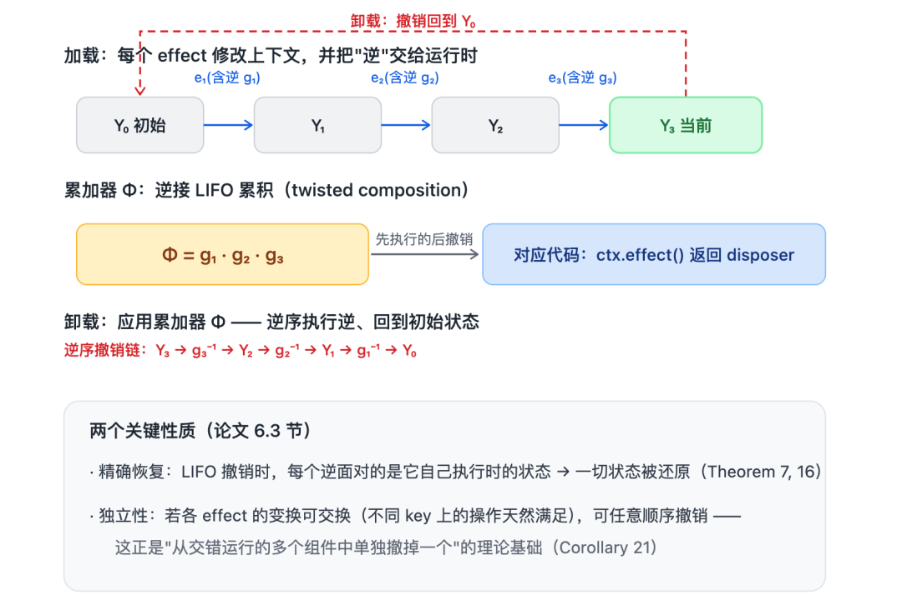
5.3.2 关键性质 1：精确恢复
如果每个逆都在它自己应用时的状态上执行，恢复是精确的（Theorem 7、16）：按 LIFO 撤销时，每个逆面对的正是它当初执行时的上下文，因此一切状态都被还原。
但真实系统里，多个组件交错运行，撤销 A 时，A 之后还有 B、C 的 effect 在执行。这时 A 的逆面对的是一个被"外来 effect 移动过"的状态。
5.3.3 关键性质 2：独立性（independence）
论文定义两个 effect 独立，当它们的所有变换互相可交换、且互不干扰对方产出的逆。对独立的一族 effect，可以按任意顺序撤销（Corollary 21），这正是"从交错运行的多个组件中单独撤掉一个"的理论基础：
只要组件的 effect 两两独立，任何一个组件都可以被单独卸载，它的贡献归零，周围组件的状态不受影响。
实际上，独立性的条件大多自动成立：不同 key 上的操作天然独立（Theorem 40，读写不同依赖表条目的操作当然可交换）。这正是事件监听器、路由注册这类"注册表操作"可任意增删的数学解释。而"有序链"（比如中间件插入顺序影响请求）则不是独立的，需要靠别处维持顺序，这就是为什么 Cordis 的 ctx.on(event, listener, { prepend }) 和 waterfall 事件需要显式顺序语义。
5.3.4 关键性质 3：恢复是"观察等价"而非字面相等
一个细节：free 把内存块还给分配器，并不会恢复 malloc 之前堆的布局；生成式名字被丢弃后，下次创建又是新名字。所以论文把恢复读作观察等价 ≃：两个状态相关，当没有观察者能区分它们。观察者的观察手段就是 coeffect，每个依赖键自带一个等价关系，状态的等价由各键的等价组装而成（Definition 33）。恢复的语义不是"回到过去"，而是"任何观察者都看不出区别"——这是让可逆性在真实系统里可成立的关键让步，也让独立性变得可达：两个操作留下的值只要 ≃ 等价，就算可交换。
5.4 响应式余效应：把"依赖"做成结构保证
5.4.1 依赖表也是类型化的
空间维度的诉求是：组件声明依赖，系统在运行时解析、提供、撤销依赖。论文把 IoC 容器形式化为余效应上下文 Σ：一个类型化的部分函数，把依赖键 k 映射到类型 V_k 的值，每个键都有静态类型，这是对"依赖查找是 any"的根治。
两个核心操作 get、set，其中 set(k, v) 的类型恰好是 5.3 的 effect 函数，注册一个依赖本身就是可逆 effect，撤销提供方时依赖自动消失。这就是两层机制协同的地方：coeffect 操作是 effect，而 effect 可逆。
5.4.2 规范与通知：激活、停用、无关
组件用规范（specification）d ⊆ K 声明它需要的依赖集合；系统判定满足性 σ ⊨ d（d 中每个键都在表里）。关键在于把每个上下文变化对照规范分类（Definition 26）：
activating ：之前不满足，现在满足了
deactivating ：之前满足，现在不满足了
neutral ：与满足性无关反应式不变量：activating 触发组件执行（带完整 effect 追踪），deactivating 触发组件恢复（应用累加器）。由于所有变更都经 effect 函数（可逆），满足性变化在每个 effect 边界都可被检测，"每个依赖变化都会被观察到"是代数层面的保证，不是靠轮询。
这就是 inject 的数学形式：inject: ['greeter'] 就是声明 d = {greeter}，fiber 保持 PENDING 直到 σ ⊨ d，提供方卸载时 d 失满足 → deactivating → 依赖方自动卸载，提供方恢复 → activating → 自动重载。
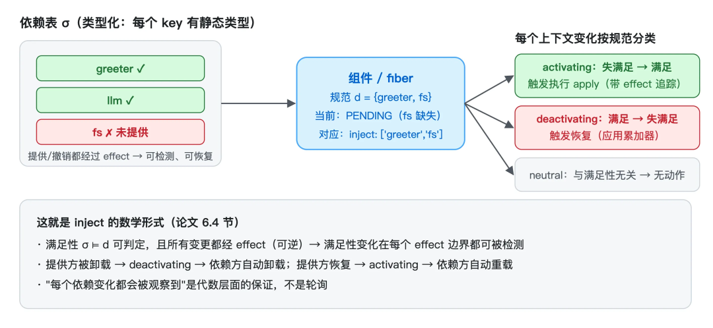
5.4.3 隔离与拦截：调整"解析"而非"存储"
论文还形式化了两个机制（对应 ctx.isolate 、 ctx.intercept）：
- 隔离（coeffect isolation）：引入 realm（域）表，
get(k)先解析ρ(k)得到 realm，再查 realm 里的值，同一个键在不同上下文解析到不同值。论文称这是"运行时 ad-hoc 多态"。多租户、测试环境、组件沙箱都是它的直接应用。与 DI 的差别：isolate是派生（derived）实现，生成一个新上下文，不改共享表，回收时直接丢弃，无需逆。
- 拦截（coeffect interception）：给依赖访问附加元数据。
get(k, μ)实际调用σ(k)(μ ⊕ ι(k)，组件声明的元数据与上下文携带的元数据按各键的幺半群语义合并（标量覆盖、集合取并），右偏：外层上下文可以约束组件如何使用某个依赖，而不修改组件本身。比如沙箱策略插件可以给shell键附加元数据，约束所有使用方。
5.5 统一上下文：Context 即范式
5.5.1 一个自相似的递归类型
把两层机制统一，论文定义上下文类型：
Γ∞ = μΓ. Γ × (Γ → Γ) × Σ自相似的递归类型：当前状态（递归）、累加器（恢复本层 effect）、依赖表（coeffect 信息）。三个投影让"效果"与"余效应"两个方向收进同一个 ctx，每个操作都能归因到调用它的具体上下文，进而归因到拥有该上下文的组件。由于 Σ 的值类型无约束，"任何需要在组件间共享的状态都可以编码成一个依赖"，Σ 不只是依赖表，它包含了一切共享可变状态。
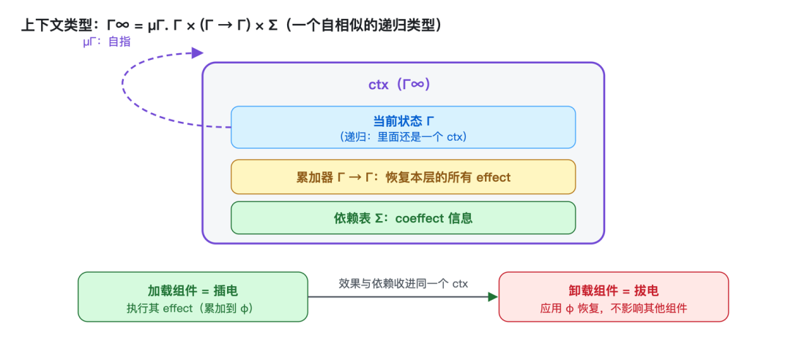
层次组合是递归结构的直接推论：加载组件 = 插电（执行其 effect），卸载 = 拔电（恢复其 effect），父上下文聚合子 effect，任意嵌套，这正是 Cordis 的插件树（见 2.2）。
5.5.2 观察等价供给独立性
- 3 的独立性需要一个条件，5.5 补上了它：在 coeffect 上定义观察等价，商掉（quotient）之后，独立性变得可达，两个操作只要留下 ≃ 等价的表，就算可交换（Theorem 42）。论文把这称为"把计算的可交换部分与对顺序敏感的部分分开"：可交换的部分交给 effect（任意顺序执行、任意顺序撤销，组件互不约束）；对顺序敏感的部分交给 coeffect（谁提供、谁声明，由依赖关系强制顺序）。
5.5.3 范式定位：两端之间的第三极
论文专门用一节（"Situating the Context Paradigm"）论证这不是"又一个框架"，而是一个独立的编程范式，定位在两大传统之间：
| 传统 | 代表 | 优点 | 代价 |
|---|---|---|---|
| 显式状态传递（函数式） | State monad、代数效应 | 效果在类型中可见、可等式推理 | 每个函数都要传递状态参数；monad 堆叠样板爆炸 |
| 隐式变更（命令式、OOP） | React useEffect、Spring getBean | 易用、无样板 | effect 靠调用顺序标识（藏在隐藏运行时状态里）；依赖是全局注册表 + null 检查 + 类型转换；"f() 改了什么依赖什么"要读实现才能懂 |
Context 范式 = 函数式的可追踪性 + 命令式的易用性：所有 effect 与依赖都通过显式 ctx 参数中介，操作可归因；同时开发者不需要写 monad 样板，提供每个原子操作的逆、声明所需依赖，其余全部自动：
"对于可逆副作用，开发者提供每个原子操作的逆，任何复合的逆由组合自动得出，组件的 teardown 是从它的 loading 推导出来的，而不是另写的；对于响应式余效应，组件只声明所需依赖，运行时自动解析与重接线。两个方向上，原本依赖开发者纪律的正确性，变成了范式的结构性质。"
Cordis 把"正确卸载、正确接线"从开发者要守的纪律，变成了定理。
5.6 动态组合演算与元理论：从局部保证到全局保证
- 3–5.5 给出的是局部性质（单组件视角）。把它们带到整个交错系统，论文定义组件为三元组
(d, p, e)，声明依赖 d、声明提供 p、带见证的 effect 函数 e；fiber 是一次实例化，携带自己的生命周期状态、累加器与"已承诺视图"（committed view，记录各依赖当时解析到哪个提供方）。系统状态里的注册表是一棵 fiber 树，而 coeffect 上下文不是存储的，是从所有活跃 fiber 的提供表联合推导出来的，每个键有且仅有一个提供方，由声明决定而非由状态决定。
由此给出操作语义（激活、停用、重载、卸载、失败等迁移规则），并证明五条元理论性质：
| 性质 | 直觉 | 工程意义 |
|---|---|---|
| Preservation（保型） | 每个迁移保持系统良构 | 状态机不会走到非法状态 |
| Temporal composability（全局） | 撤掉一个 fiber，它的贡献归零，周围 fiber 原样（Corollary 62） | 单个插件可热卸载，不影响邻居 |
| Spatial composability（全局） | 提供方离开前，依赖它的 fiber 先被停用（Theorem 63） | 不需要手动编排卸载顺序 |
| Progress（进展） | 只要未达到 quiescent 就有规则可应用（无死锁）；且目标视图翻转次数有限、步骤数有上界，必然终止（Theorem 66） | 配置更新一定会收敛，不会卡死 |
| Confluence（汇合） | 稳定状态只由最终配置决定，与加载、卸载的中间顺序无关（Theorem 73） | 配置对账（reconciliation）可以增量、任意顺序执行 |
其中 Progress 有个很实的前提：precedence 关系 ≺（我提供你声明的键）必须无环，这正是依赖图不能成环的数学表达，也是 Cordis 拒绝循环依赖的原因。而 Confluence 是整篇论文最直接的工程收益：因为它，Loader 可以对配置做增量对账而不用担心顺序，无论先装谁、后卸谁，系统最后到达的状态都一样。
5.7 理论如何变成代码
论文的实现章节给出一张完整的理论→代码对照表（摘录）：
| 理论 | 实现 |
|---|---|
| 上下文 Γ∞ | ctx （一等上下文） |
| 效应上下文 ∂Γ、累加器 | ctx.effect ，fiber 的 accumulator |
get(k) 、 set(k, v) | ctx.get(key) 、 ctx.set(key, value) |
isolate(k, r) 、 intercept(k, ν) | ctx.isolate(key, realm) 、 ctx.intercept(key, meta) |
| 组件实例（fiber） | fiber：uid 、 inject 、 provide 、 apply 、 parent 、 state 、 committed 、 inertia（进行中迁移的句柄） |
| 注册表 | ctx.registry |
| 恢复（accumulator） | fiber.dispose() |
Loader 部分对应论文的声明式配置：
- entry（配置条目）=
id（对账键）、url（DSH 配置里写作name）、isolate、intercept（注解）、config（绑定进apply的配置）、disabled（管理性关闭），与 DSH 的cordis.yml条目一一对应；
- 配置对账（reconciliation）：按字段差异选择最小操作，
id/url变了重建，isolate变了重分配 realm，intercept原地更新（读取时才咨询），config交给组件自行 diff，disabled卸载、重载；group 条目的子列表按 id 做键控 diff，递归下探。对账之所以可以增量、任意顺序，正是 5.6 的定理撑腰；
- HMR 三阶段：① 依赖图不动点分类模块 accept/decline（被 accept 的导入 → accept；所有导入都 decline → decline；陷入环的默认 decline）→ ② 按 entry 的传递依赖树检测过期条目 → ③ 事务性重载：备份模块缓存，逐个 dispose 旧 fiber、挂载新 fiber，任何一步失败则恢复缓存、用旧模块重建，系统永远不会处于半重载状态。注意：Cordis 的 HMR 不需要开发者标注 accept 边界（对比 Webpack/Vite），因为 fiber 本身就界定了组件全部效果的边界，替换一个组件 = 一次 fiber 操作。
论文的讨论章节还展开了一些工程延伸：
- 系统边界（system boundary）：不是所有东西都可逆，可独占修改、可恢复的位置"在边界内"（文件、私有内存），会被外部程序读写的位置"在边界外"（操作视为不可追踪）。
ctx.intercept可以把一个外部位置 reify 成可逆操作：把它包装成一组自带逆的受限操作，边界就向内移动。移动边界本身是权衡：换取可恢复性，付出每次访问的开销。
- 补偿（compensation）：对真正无法逆转的"发射"（邮件已发出、款项已扣），用应用级补偿动作（删文件、退款）替代，且补偿按 LIFO 顺序组合，删除的逆是再创建，退款的逆是再扣款。
- 服务多路复用（service multiplexing）：独占绑定（一个接口同时只绑一个实现，切换要短暂扰动所有消费方）vs 服务代理（service broker），一个常驻 broker 注入给提供方和消费方，多个提供方共存、broker 分发请求。消费方永远看到同一个依赖，提供方热更新不触发任何重载。由此获得三个能力：负载均衡、滚动更新、跨进程调用。这正是 DSH 的
llm适配器注册表与 pi-ai 多提供方机制的论文原型。
5.8 与既有系统的对比：特点的证明
把 Cordis 放进坐标里，它的位置才清晰。沿着"时间维（卸载）→ 空间维（依赖）"两个轴，逐个对照八类系统。
传统 DI 容器（Spring、NestJS、InversifyJS）
- 模型：容器负责创建与绑定（
bind、getBean），对象图在启动时装配。
- 时间维：
getBean拿到的服务没有生命周期管理，容器不知道、也不负责"服务下线后谁清理它的副作用"。NestJS 的OnModuleDestroy是手动钩子，而且把"创建效果"与"清理效果"写在两处，违背关注点局部性（论文在 VS Code 的deactivate上批评过同样的问题）。
- 空间维：依赖是运行时查找，
getBean的返回值往往需要调用方自己断言类型（Java 里是类型转换，很多框架里干脆是any）；依赖关系隐式、散落在代码各处。
- 差距：绑定即永久。容器的隐含假设是"一旦装配，对象图不再变化"，没有"服务消失 → 依赖方自动重建"的概念，与 Cordis 的假设（服务可随时出现、可随时消失）正好相反。
React Hooks
- 模型：
useEffect(fn, deps)把副作用挂到组件实例上。
- 时间维：清理函数是有的（return 的 cleanup），但 effect 的"目标"是隐式的，它靠调用顺序在隐藏的运行时状态里登记，函数组件卸载时按注册顺序清理。这套机制绑死在 React 的渲染模型上，无法推广为通用组件的装卸语义。
- 空间维：依赖数组是静态声明，
deps只在渲染时做值比较，没有运行时依赖解析，也没有"依赖提供方被替换 → 依赖方自动重载"。
- 差距：React 的 effect 是"组件内的回调"，Cordis 的 effect 是"上下文上的可逆变换"。前者服务于 UI 渲染生命周期，后者服务于任意组件的装卸。
OSGi
- 模型：模块化 Java 的经典方案，服务注册表 + provider、consumer，是所有对照里最接近 Cordis 的先驱。
- 时间维：bundle（模块）可以动态安装与卸载，服务注册、注销是动态的。
- 空间维：consumer 通过服务注册表绑定服务；但服务消失时，consumer 不会自动重连或重载，它拿到的是已失效的引用，需要自己处理。
- 差距：OSGi 有"动态"的机制，却没有"响应式"的语义。Cordis 的 reactive coeffects 把"依赖变化 → 分类通知 → 激活、停用 → 自动重载"做成了框架级行为，这正是论文 spatial composability 定理的兑现。
VS Code 扩展宿主
- 模型：扩展在共享进程（extension host）里
activate，通过固定的扩展点（commands、views）贡献能力。
- 时间维：无法在运行时卸载单个扩展，禁用、卸载必须重启整个宿主（实测数据见 5.1）；
deactivate钩子只在进程退出时调用。
- 空间维：
extensionDependencies几乎没人用；扩展间交互靠vscode.extensions.getExtension(...).exports，返回值是未检查的any。
- 差距：VS Code 的问题不是"实现得不好"，而是"架构上没有这条路径"，插件向固定扩展点贡献能力，而不是向其他插件声明依赖。
微服务、容器（粗粒度替代）
- 模型：把时间可组合性下放给进程（重启即恢复），把空间可组合性下放给编排器（K8s 服务发现）。
- 代价：每次重启丢弃全部进程内状态（缓存、连接、半成品计算），重建要花秒级到分钟级；跨地址空间的依赖只能用网络表达，无法用函数调用；编排器也无法表达共享同一地址空间的组件间依赖。
- 差距：粒度错配。现代系统在进程内、组件级进行组合，而容器提供的组合粒度在进程外。
monadic effect（ZIO、Effect-TS、fp-ts）
- 模型：把副作用编码进类型系统，
ZIO[R, E, A]、Effect<A, E, R>，其中R就是"这个计算需要什么服务"。
- 时间维：追踪是monad 嵌入换来的，程序必须整个写进 effect 类型，才能获得追踪；Cordis 则是对普通宿主代码的覆盖式追踪（
ctx.effect包住任意代码）。
- 空间维：需求（
R）由解释器（interpreter）在运行时装配；但服务被撤走时，已经通过它执行的操作留在原地，没有逆，没有恢复。
- 差距：这正是论文 5.3 / 5.4 的对照：Cordis 把"追踪"从类型嵌入换成运行时逆追踪，把"需求装配"从一次性解释换成持续重解析。
代数效应（Effekt、Koka）
- 模型：effect 操作对类型系统可见，一个操作可以有不同的 handler 语义。
- 时间维、空间维：静态类型层纪律，能力默认是 second-class、限于词法作用域（Effekt 通过 boxing 提升为一等）。
- 差距：目的不同。代数效应让 effect 可见是为了"模块化解释"（一个操作多种语义）；Cordis 让 effect 可见是为了"追踪与逆转"（每个变换配对逆）。论文 7.1 节明确点出了这一区别。
Webpack / Vite HMR
- 模型：开发期的模块热替换。
- 时间维：需要开发者标注 accept 边界（
module.hot.accept），漏标就退化为整页刷新，替换边界由人工声明。
- 差距：Cordis 的 HMR 不需要 accept，fiber 本身就界定了组件的全部效果边界，替换一个组件 = 一次 fiber 操作（dispose 旧的 + 挂载新的），且是事务性的（失败回滚，绝不进入半重载状态）。
收束：一张表
| 系统 | 时间维（卸载） | 空间维（依赖） | 差距 |
|---|---|---|---|
| 传统 DI（Spring） | 无：getBean 拿到的服务没有生命周期管理 | 全局注册表，null 检查 + 类型转换 | 绑定即永久；依赖关系隐式、散落 |
React useEffect | effect 可清理，但靠调用顺序标识，目标隐式 | hooks 依赖数组与 effect 分离 | 卸载语义不随组件树自动成立 |
| OSGi | 服务可卸载，但消费方不自动重连 | 服务模型（provider、consumer） | 有动态机制，无响应式语义 |
| VS Code | 无法热卸载：87% 热门扩展需重启宿主 | extensionDependencies 几乎没人用，exports 是 any | 只能整宿主重启 |
| 微服务、容器 | 进程粒度重启，丢弃全部状态 | 编排器粒度，无法表达共享地址空间的依赖 | 粒度错配 |
| ZIO、Effect-TS | 追踪靠 monad 嵌入，程序必须写进 effect 类型 | 需求靠解释器；服务撤走时已执行的操作留在原地 | 不能对普通宿主代码做覆盖式追踪 |
| 代数效应（Effekt） | 静态类型层纪律，能力限于词法作用域 | 静态解析 | 目的不同：Effekt 为解释，Cordis 为追踪与逆转 |
| Webpack、Vite HMR | 需要开发者标注 accept 边界 | — | 替换边界靠人工声明 |
| Cordis | 每个变换携带逆，恢复是定理；HMR 不需要 accept 边界 | 依赖是类型化表，变化被分类通知，自动重连是定理 | 时间与空间两维同时由运行时承担 |
从 Agent 运行时的角度看，这个对比更直观：
| 需求 | 传统 DI 容器 | Cordis |
|---|---|---|
| 服务被替换、卸载后自动清理 | 不负责，需手写或泄漏 | effect 自动回滚 |
| 依赖提供方热替换后自动重建 | 做不到 | 依赖方自动卸载重载 |
| 配置决定组合，改配置即热重载 | 配置通常启动时一次性 | cordis.yml 即插件树 |
| 服务运行时消失 | 视为异常 | 视为常态，优雅降级 |
| 有序决策链（权限→审批→超时→执行） | 需自行搭建 middleware | waterfall 事件原生支持 |
5.9 结论：点名自进化 Agent
论文结论明确把 self-evolving agent harnesses（自进化 Agent 运行时） 列为未来验证方向：AI 在少有人监督的情况下持续生成并替换自己的组件，需要"快速替换下的完整恢复保证"（时间维）与"频繁拓扑变化下的依赖协调保证"（空间维）。论文写作时这还只是展望，而 DSH 的 cordis_define 、 cordis_run 正是这一方向的具体实现：Agent 现场生成动态插件、沙箱运行、随时卸载，恰好是在压测 5.6 的时间与空间定理。
理论在前，实践随后。Cordis 最值得关注的地方不是它写得不错，而是它把"安全地动态装卸组件"从纪律变成了定理——而这恰恰是自进化软件唯一靠得住的地基。
6. 生态：Cordis 不止有 Koishi
6.1 Koishi：第一个实战平台
论文的案例研究就是 Koishi，并给出数据：四年间积累了 4000+ 社区插件。从 npm registry 核实了当前数字：
@koishijs官方 scope：155 个包，其中插件 112 个、各平台适配器 19 个（QQ、Discord、Telegram、Lark……）；
- 社区
koishi-plugin-*前缀：约 3951 个包。
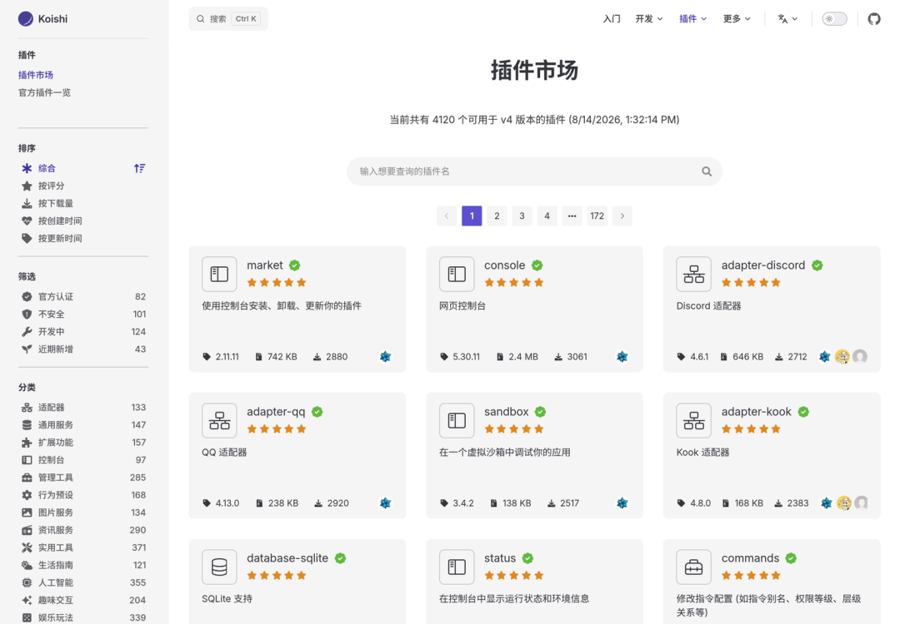
只看插件数量，还低估了它的规模。另一组 2026 年 8 月实测的数据：
- npm 下载量：
koishi近一年约 34 万次下载，cordis近一年约 51 万次（周均约 1 万）；
- GitHub：
koishijs/koishi约 5800 star，cordiverse/cordis约 2400 star；
- 社区规模：官方 FAQ 称有数千位活跃搭建者，其中许多人的单个机器人就覆盖数万活跃用户；
- 官方认可：Koishi 以组织身份出现在中科院软件所主办的"开源之夏"（Open Source Promotion Plan）2025 的项目列表中。
论文还指出了一个设计上的验证：Koishi 的 Web 控制台是第二个独立的 Cordis 应用（浏览器里运行着另一棵插件树）；适配器、数据库驱动与功能插件之间形成了真实的依赖拓扑，切换存储后端或重连适配器时，只有依赖真正变化的那部分插件会被重新激活。这验证了"跨独立作者协作"的场景：插件与其依赖通常由不同作者编写，双方只通过服务契约（coeffect）协调。
一个版本事实：Koishi 目前仍使用 Cordis 3.x（@koishijs/core 依赖 cordis: ^3.18.1），而论文与 DSH 使用的是 4.x。核心组合模型两代共享，但 4.x 重构了 effect、coeffect 语义与 Loader。
一个在 Koishi 圈写过几年插件的开发者视角：这套生态里的插件很少直接互相调用，大家靠服务契约（inject）和事件协作。写插件的人通常只关心自己声明了什么依赖、注册了什么效果，谁先启动、谁依赖谁、谁负责清理，是 Cordis 的事，不是作者的事。
6.2 @cordisjs：独立的通用生态
Koishi 之外，Cordis 还维持着一个独立的官方生态，@cordisjs scope 下现有 101 个包，覆盖了一个通用应用框架所需的全部组件：
- 核心机制：
loader、plugin-loader、plugin-include、plugin-hmr、plugin-group、plugin-config、schema、timer、logger；
- 服务端：
plugin-server（含-acl、-proxy、-static、-temp、-webui）、plugin-http；
- 数据：
plugin-database及 sqlite、mysql、postgres、mongo、memory 驱动；
- 业务基础设施：
mail、sms（多家供应商）、sso（十几家登录方式）、webui控制台、market插件市场、manager、insight（插件依赖关系图）、cli、client、components、create-cordis（脚手架）。
这些包的存在说明：Cordis 不是"为 Koishi 定制的内核"，而是一个真正通用的应用框架，Koishi 与 DSH 只是它的两个实例，一个在 IM 领域，一个在 Agent 领域。
6.3 生态背后的几件事
- 小且可审计：核心几千行 TypeScript，DSH 整体 vendor 进仓库并做了约 18 处本地修改（生命周期加固、配置加载事务化、表达式延迟求值等）。不依赖外部注册表、不怕上游 breaking change、可按自身使用模式调优；
- 实战验证：Cordis 在 Koishi 生态经历了上千插件的并发运行考验，插件框架最难的"注册、注销边角问题"，已经被长期实战覆盖；
- TypeScript-first：声明合并让扩展点全链路类型安全；DSH 甚至从这些声明自动生成供模型阅读的 API 目录，类型系统本身变成了 Agent 的操作手册。
7. 结语：心脏、引擎与定理
Cordis 是 Koishi 的心，几千行 TypeScript，把"怎么安全地装卸组件"从开发者的自觉变成了框架级承诺——ctx.effect 注册即回滚，inject 声明即等待，配置文件即应用。DSH 把同一个框架搬进 Agent 运行时，工具、模型、存储、界面全是插件，配置由 patch 层叠加，连 AI 都能通过 cordis_inspect 、 cordis_run 检查并改装自己运行的系统。论文用 88 页把这两件事形式化，给出证明：卸载必然恢复、依赖自动重连、配置对账必然收敛。
Cordis 最值得关注的地方，不是它写得不错，而是它把"安全地动态装卸组件"从开发者纪律变成了定理——而这恰恰是自进化软件唯一靠得住的地基。
如果还想继续深入，可以按这个顺序：
- DSH 官方教程（七章，每个例子可运行）：cordis-tutorial
- DSH 官方入门（五个核心概念浓缩版）：cordis-primer.zh.md
上游仓库：cordiverse/cordis
Koishi 生态：koishi.chat
- DeepSeek Harness：deepseek-ai/deepseek-harness
参考资料
- cordis - npm（版本时间线）
- Koishi 常见问题（Koishi 由 Shigma 创立，2020 年 1 月发布首个正式版）
- Shigma 专访（腾讯媒体研究院，2023-11-28）：QQ机器人开发创业青年Shigma专访：人类未来会被AI取代吗？；B 站搬运：BV1AQ4y157S8
- 影响力数据（2026-08 实测）：koishi、cordis 近一年 npm 下载量约 34 万、51 万次（api.npmjs.org）；
koishijs/koishi约 5800 star、cordiverse/cordis约 2400 star（github.com）；社区规模与"单机器人覆盖数万活跃用户"见 Koishi 常见问题；Koishi 在开源之夏 2025 项目列表中
- 文中截图（2026-08）：Shigma 的 GitHub 主页、Koishi 插件市场、DeepSeek Harness 设置页插件清单；社区插件截图（dsh-visualize、dsh-task-status、dsh-stock-market、dsh-web-ui）均取自各自仓库 README；示意图为本文自制 SVG
- 社区插件生态：awesome-dsh-plugin（GitHub
#dsh-plugin，2026-08 收录 174 个插件）
- 生态数据（2026-08 实测）：
@koishijsscope 155 包、koishi-plugin-*前缀 3951 包、@cordisjsscope 101 包（npm registry 枚举）；@koishijs/core4.18.11 依赖cordis: ^3.18.1

归属：[[02-输入/按主题/AI与效率/_index|AI与效率]]